A hands-on walkthrough of Multi-Token Prediction — what it is,
why it nearly doubles generation speed, and the end-to-end install path through
llama.cpp. Includes the failed Ollama detour, three real use cases,
and the production-ready llama-server recipe.
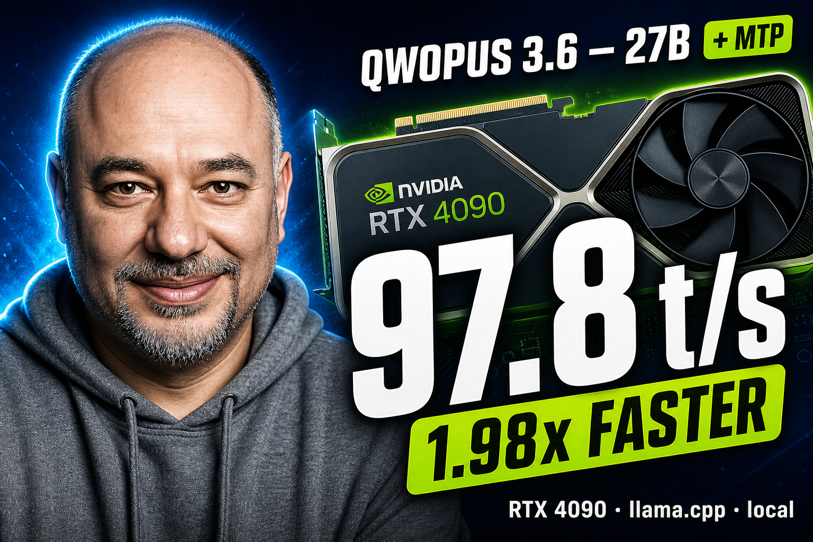
On a single RTX 4090, the new Jackrong/Qwopus3.6-27B-v2-MTP-GGUF
runs the same model at 1.98× the speed of the baseline (peak 2.21×
on math reasoning) — no quality loss, just one extra CLI flag:
--spec-type draft-mtp --spec-draft-n-max 3.
I tried Ollama 0.24 first because it was already installed. It refused to start
the model with qwen3next: layer 64 missing attn_qkv/attn_gate projections. So
llama.cpp from source it is — this article walks through the working path,
benchmarks three use cases, and shows the production recipe.
Local large language models are bottlenecked by their sequential token output: each new word has to wait for the previous one to finish, the way cars queue up on a single-lane road. On a single RTX 4090, that ceiling is roughly 44 tokens per second for a dense 27B model in 4-bit quantization. It is fine on paper; in practice it is the lag you feel between sentences whenever a local model is writing a long answer.
Multi-Token Prediction (MTP) — popularised by DeepSeek V3 and adopted by Qwen 3.5 / 3.6 / Qwopus — collapses the road into multiple lanes. Instead of asking the model "what is the next token?", MTP asks it to guess two or three tokens ahead in the same forward pass and verify those guesses in the same pass. When the guesses are correct (and they usually are), you get two or three tokens for the cost of one. The verifier guarantees the output is identical to greedy decoding — there is no quality trade-off.
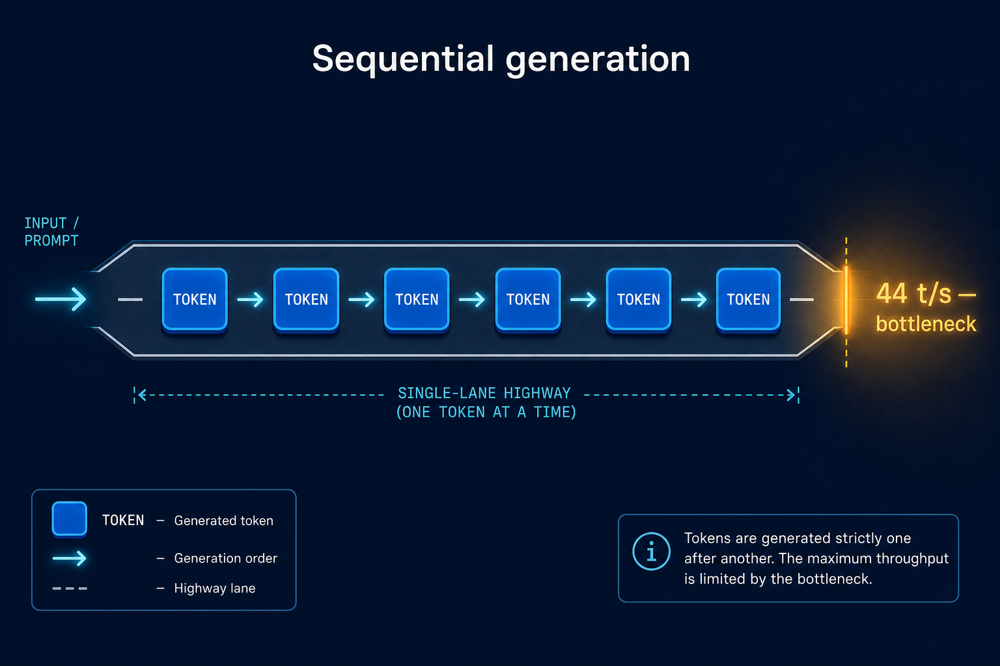
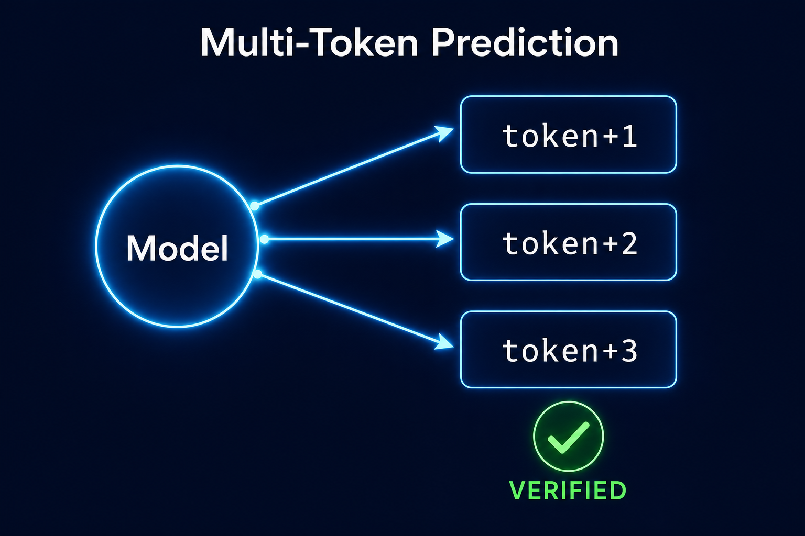
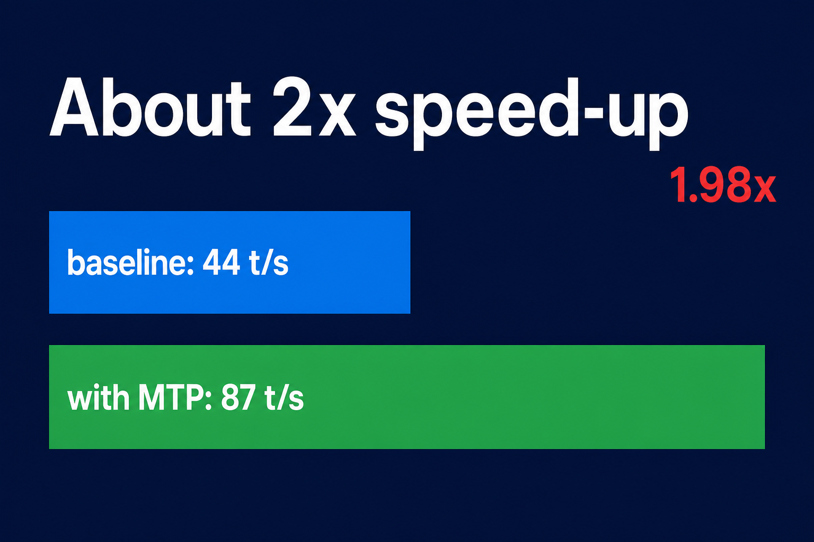
Jackrong/Qwopus3.6-27B-v2-MTP-GGUF
is a dense qwen35-architecture model fine-tuned on top of Qwen 3.6-27B with the
MTP heads baked in. 27.32 billion parameters, distributed as a single
GGUF file, available in twelve quantizations from Q2_K (10.9 GB)
to BF16 (54.7 GB). For a 24 GB GPU the sweet spot is Q4_K_M at
16.8 GB — it leaves about 7 GB of headroom for context and activations.
License is Apache 2.0, so commercial use is fine. The author's recommended
sampler is temperature=0.6 top_p=0.95 top_k=20; the context window is 49,152
tokens (I used 8,192 for the bench).
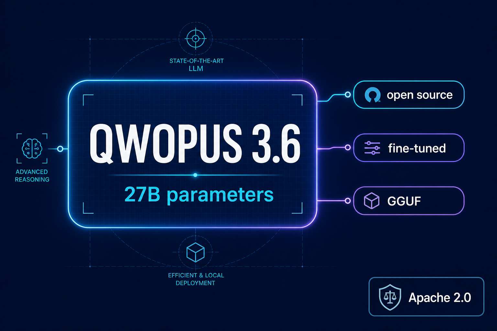
Before installation specifics, here is what the thing actually does. I picked three prompts that exercise very different token distributions: idiomatic Python, a one-off DevOps shell scripting question, and a step-by-step math proof. The whole point of MTP is that its benefit varies with token predictability — and that effect shows up clearly here.
The prompt was "write a Python function that computes the nth Fibonacci number using
memoization, just the code." The model picked functools.lru_cache — the
Pythonic choice — and added a guard against negative n. Idiomatic; ready
for an editor.
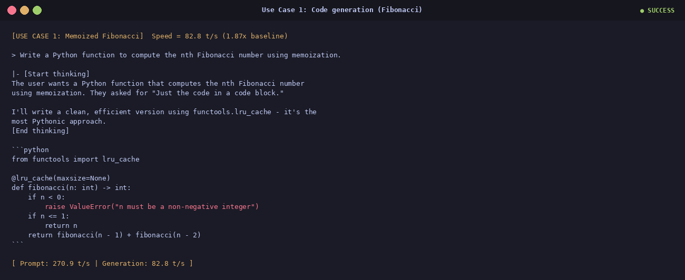
/var/log
The model considered du, ls -lSh and an awk variant,
then committed to the tightest one-liner with a four-bullet explanation. The kind of
one-off shell-scripting answer you do every other Tuesday.
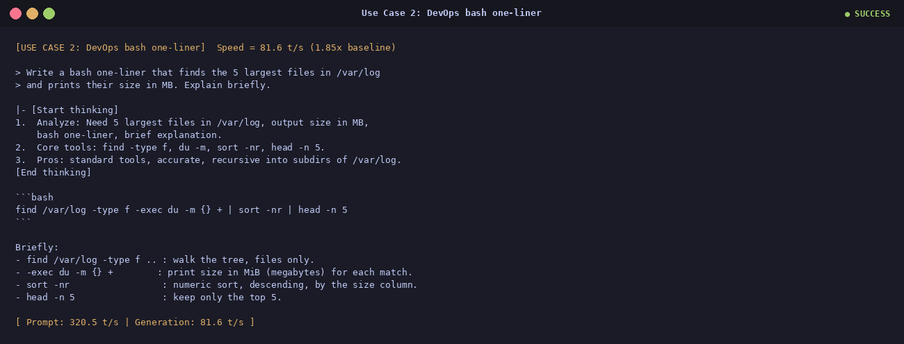
A bag has 4 red and 6 blue marbles; you draw two without replacement; what is the
probability both are blue? The model walked through it step by step, then double-checked
with combinations C(6,2)/C(10,2) = 15/45 = 1/3. 97.8 t/s on
this run — the fastest of the whole bench. Math reasoning has highly predictable tokens,
which is exactly what the MTP draft heads love.
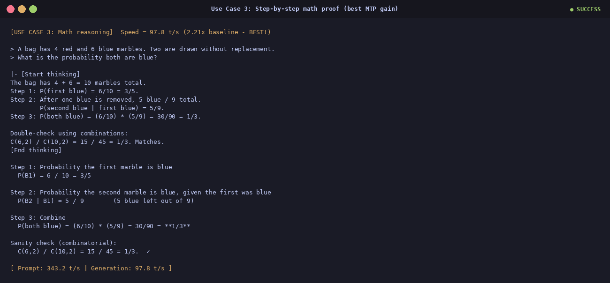
Three prompts × three modes (baseline / MTP n=2 / MTP n=3) =
9 runs. The chart shows generation speed in tokens per second; the second panel is the
speedup factor over baseline. Same model, same hardware, same answer.
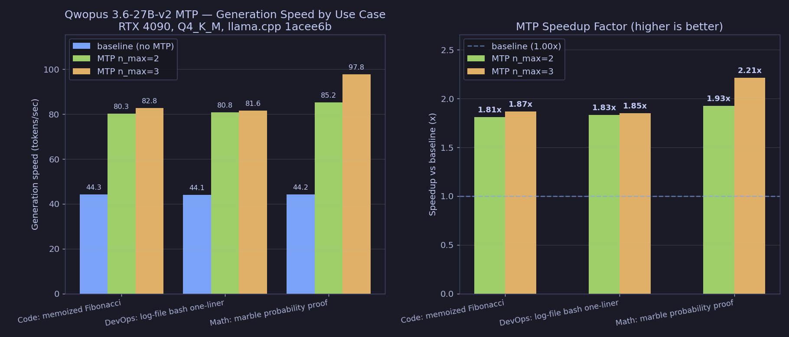
| Use case | Baseline (t/s) | MTP n=2 |
MTP n=3 |
Best speedup |
|---|---|---|---|---|
| Code · Fibonacci | 44.3 | 80.3 | 82.8 | 1.87× |
| DevOps · log scan | 44.1 | 80.8 | 81.6 | 1.85× |
| Math · probability | 44.2 | 85.2 | 97.8 | 2.21× |
| Average | 44.2 | 82.1 | 87.4 | 1.98× |
| Prompt-processing avg | 463.6 | 322.8 | 311.5 | 0.67× |
Honest question: Ollama was already installed, has a clean Modelfile API, and would have saved me from compiling C++ from source. So I tried it first.
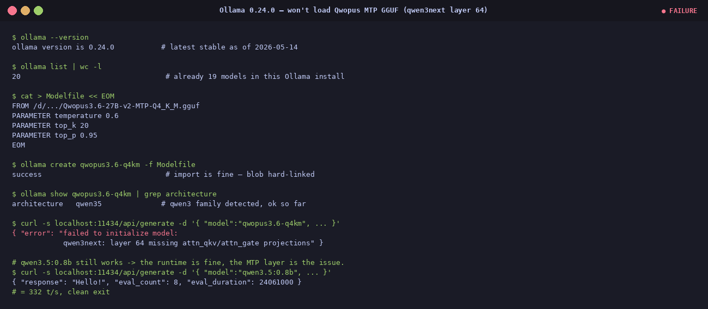
The import succeeds — the blob is hard-linked, no re-download, Ollama recognises the
architecture as qwen35. The very first generate call, however, throws an
error instead of a response:
{ "error": "failed to initialize model:
qwen3next: layer 64 missing attn_qkv/attn_gate projections" }
Zero tokens generated. To prove the runtime itself is fine, a plain non-MTP
qwen3.5:0.8b from the existing library runs cleanly at 332 t/s
on the same API. It is specifically the MTP-augmented layer 64 that breaks Ollama.
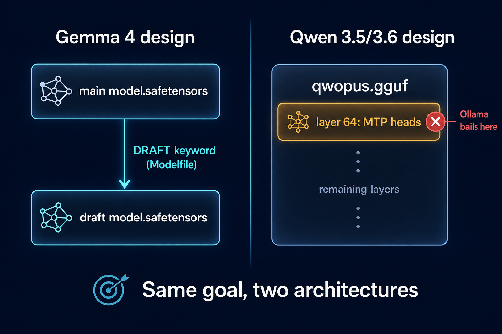
Here is the root cause. Ollama's MTP support
(PR #15980) was
designed for Gemma 4, which keeps its draft model in a separate
safetensors file pointed at via a new DRAFT Modelfile keyword. The Qwen
3.5 / 3.6 family — including Qwopus — takes the opposite approach: the draft heads
are baked directly into layer 64 of the same GGUF. When Ollama's
qwen3next loader walks that layer expecting standard attention projections, it
finds MTP draft-head weights instead and bails out.
The fix has to come from Ollama upstream. A future minor release should add
qwen3next MTP support, at which point a five-line Modelfile is the entire
install. Until then, llama.cpp is the only engine that can actually use this
GGUF.
ollama 0.24.0 on Linux x86_64.
The error is reproducible from any client of the
POST /api/generate endpoint with the imported model; it is the model loader,
not the chat template or the client.
llama.cpp end to endSix steps. Open-source toolchain. No Docker, no Kubernetes, no hosted dashboards.
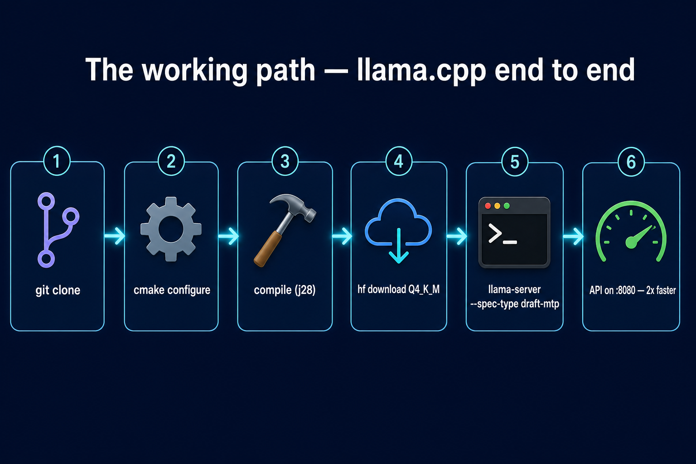
ggml-org/llama.cpp main branch — MTP merged in PR #22673, May 2026.-DGGML_CUDA=ON -DCMAKE_CUDA_ARCHITECTURES=89. Pinning sm_89 (the RTX 4090's native arch) turns a 25-minute build into ~7 minutes on a 28-thread box.cmake --build build -j$(nproc). You end up with llama-cli, llama-server, and llama-bench in build/bin/.HF_HOME at a data disk (the Q4_K_M is 16.8 GB; do not put it on your system drive). hf download Jackrong/Qwopus3.6-27B-v2-MTP-GGUF Qwopus3.6-27B-v2-MTP-Q4_K_M.gguf finishes in about 3 minutes.llama-server with the MTP flags (see below).MODEL=/d/hugging_face_cache/hub/models--Jackrong--Qwopus3.6-27B-v2-MTP-GGUF/\
snapshots/<hash>/Qwopus3.6-27B-v2-MTP-Q4_K_M.gguf
./build/bin/llama-server \
-m "$MODEL" \
-ngl 99 -c 8192 -fa on \
--spec-type draft-mtp --spec-draft-n-max 3 \
-np 1 --jinja \
--cache-type-k q8_0 --cache-type-v q8_0 \
--temp 0.6 --top-p 0.95 --top-k 20 --min-p 0.0 \
--host 0.0.0.0 --port 8080
Bind on 0.0.0.0 so other machines on your LAN can reach the API.
--cache-type-k q8_0 --cache-type-v q8_0 halves the KV-cache memory with no
measurable quality drop at sensible context lengths. -np 1 is required for
MTP today.
llama-server is running, point any
browser at http://localhost:8080 (or
http://<lan-ip>:8080 from another machine) and you get the bundled
chat UI. It is a SvelteKit single-page app shipped inside the binary — no Docker, no Node,
no extra dependencies.
A 15-minute narrated tutorial covers the same material: use cases first, then the
benchmark, then the Ollama failure, then the working llama.cpp path, then an
"Advanced" deep-dive into the install. The deck was rendered with
Remotion and narrated with
a local supertonic-tts M1 voice on the same RTX 4090.
Heads up — from here on, it gets technical. If you just wanted the recipe, you already have it. If you want to reproduce on your own machine, here's every step plus every wall I hit on the first run.
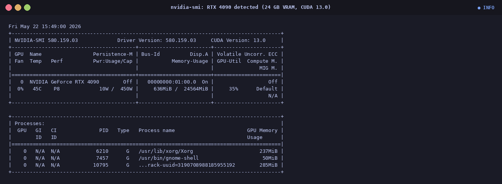
/d/hugging_face_cache/) — keep model weights off the system drive
Pin a specific Python version and keep dependencies project-local so nothing leaks into
the system. Watch out for any stray VIRTUAL_ENV that might be active in
your shell — it picks up the wrong interpreter at venv creation time.
$ asdf local python 3.12.3
$ unset VIRTUAL_ENV
$ python -m venv .venv
$ .venv/bin/pip install huggingface_hub pillow matplotlib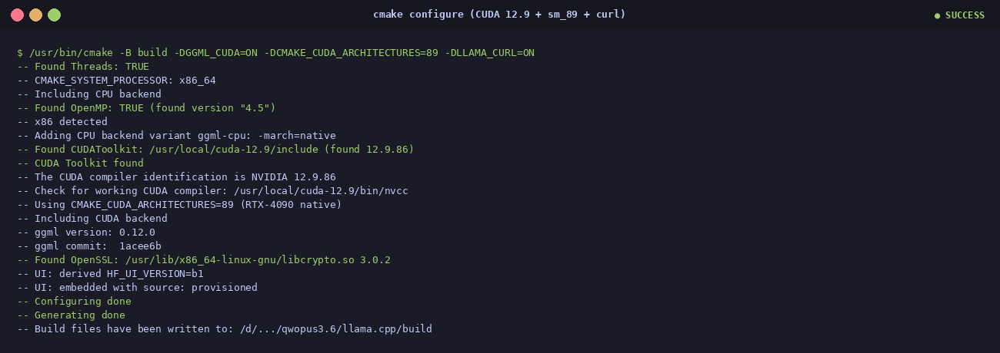
$ git clone --depth 1 https://github.com/ggml-org/llama.cpp
$ cd llama.cpp
$ /usr/bin/cmake -B build \
-DGGML_CUDA=ON \
-DCMAKE_CUDA_ARCHITECTURES=89 \
-DLLAMA_CURL=ON
$ /usr/bin/cmake --build build -j$(nproc)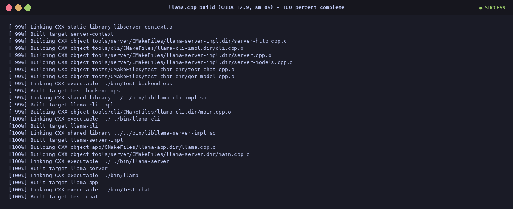
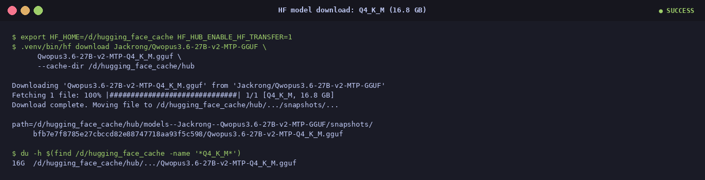
$ export HF_HOME=/d/hugging_face_cache HF_HUB_ENABLE_HF_TRANSFER=1
$ .venv/bin/hf download Jackrong/Qwopus3.6-27B-v2-MTP-GGUF \
Qwopus3.6-27B-v2-MTP-Q4_K_M.gguf \
--cache-dir /d/hugging_face_cache/hubHF Xet does the heavy lifting under the hood — parallel chunks, resume on disconnect. About 3 minutes on a reasonable connection.
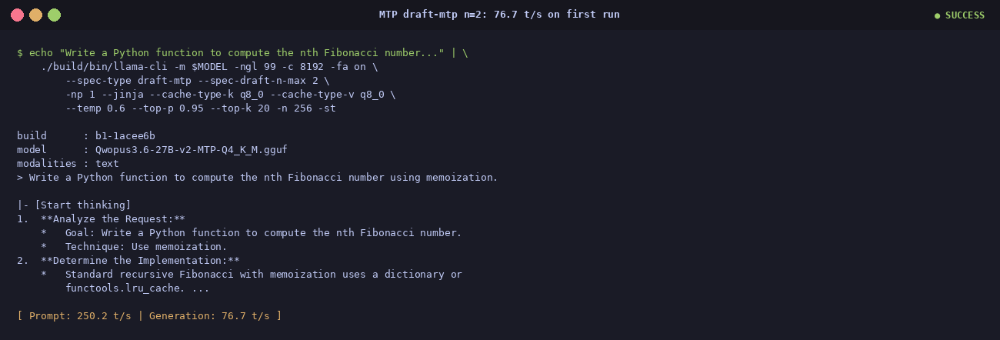
The first time the --spec-type draft-mtp --spec-draft-n-max 2 combination
worked end-to-end. 76.7 t/s out of the gate. Once stable, bumping
n-max to 3 picks up another 5–15 % on most prompts (and the headline 2.21×
on math).
Nothing was smooth on the first pass. If you are following along at home, this is the section that will save you the most time.
cmake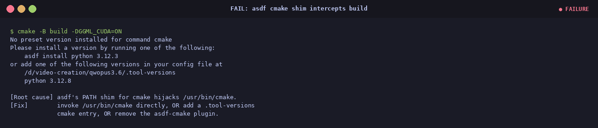
cmake triggered an asdf shim error.
cmake plugin entry but no
version pinned.
/usr/bin/cmake directly, or add
cmake system to .tool-versions.
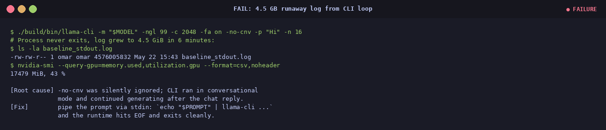
llama-cli -no-cnv -p "Hi" -n 16 ran for six minutes
instead of producing 16 tokens. Log grew to 4.5 GiB.
-no-cnv was silently ignored on that build;
the CLI looped in conversational mode.
-p:
echo "$PROMPT" | ./llama-cli ... -st. EOF on stdin terminates cleanly.
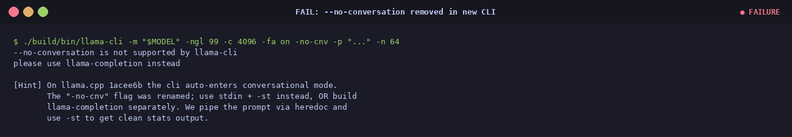
-no-cnv stopped being
silently ignored and became a hard error.
-st for the
speed stats. The CLI evolves fast; adapt your runner instead of fighting the defaults.
Jackrong/Qwopus3.6-27B-v2-MTP-GGUF — the model card with all twelve quantizations and the sampler recipe.--spec-type draft-mtp to main, May 2026.DRAFT Modelfile keyword, the design that does not work for Qwen 3.5/3.6.llama.cpp.
Latency, not just throughput
Per-token latency drops from ~22.6 ms baseline to ~11.4 ms with MTP
n=3— about 50 % less time spent waiting between visible characters. Note the trade-off in the last row: prompt prefill is ~30 % slower because the draft heads add work to every forward pass. For interactive chat the generation speedup dominates; for batch evaluation with very short answers the trade-off shifts.